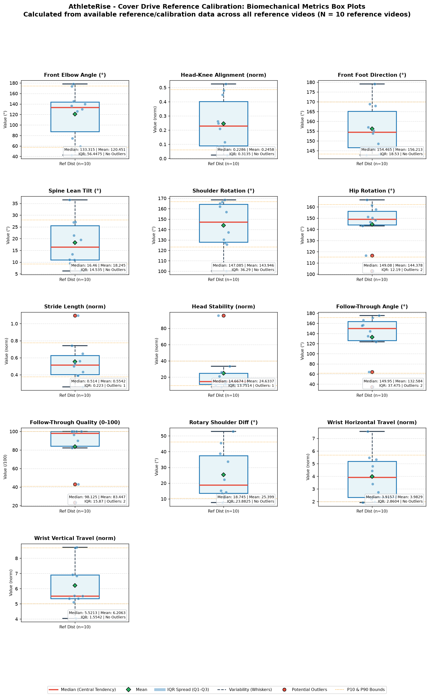
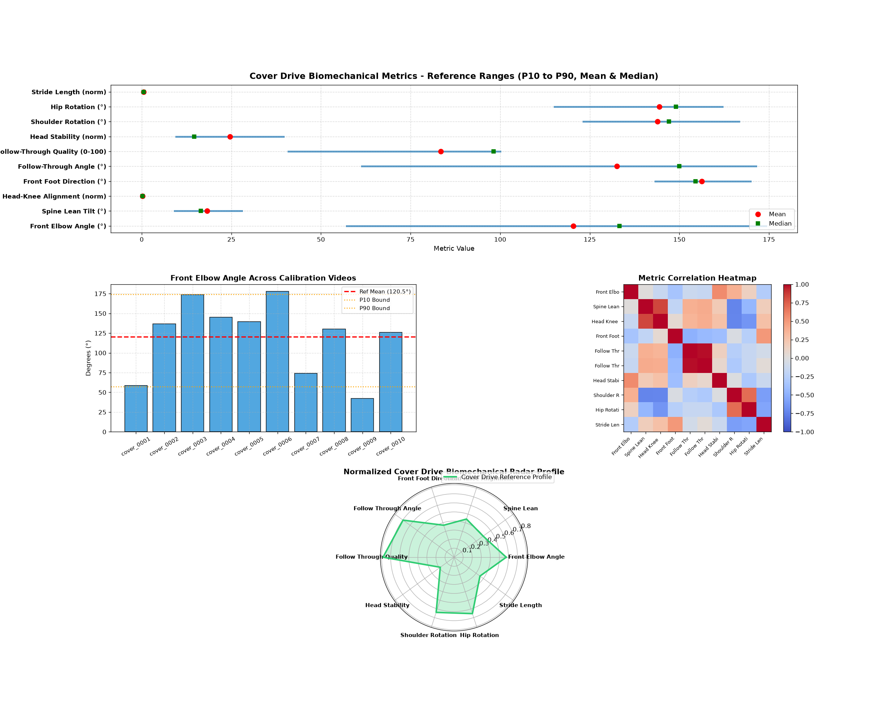

Shot Type: Cover Drive | Handedness: MIXED
10
10
0
Empirical Reference
P10 - P90
Each biomechanical metric is treated independently across all reference videos.
| Metric | Valid Samples | Mean | Median | Std Dev | Variance | Min | Max | Q1 (P25) | Q3 (P75) | IQR | P10 | P90 | P10-P90 Range |
|---|---|---|---|---|---|---|---|---|---|---|---|---|---|
| Front Elbow Angle (°) | 10 | 120.45 | 133.31 | 44.18 | 1952.30 | 42.43 | 177.98 | 87.20 | 143.65 | 56.45 | 57.19 | 174.23 | 57.19 - 174.23 |
| Spine Lean Tilt (°) | 10 | 18.25 | 16.46 | 9.20 | 84.59 | 6.23 | 36.51 | 10.98 | 25.52 | 14.54 | 9.20 | 27.95 | 9.20 - 27.95 |
| Head-Knee Alignment (norm) | 10 | 0.25 | 0.23 | 0.17 | 0.03 | 0.02 | 0.52 | 0.09 | 0.40 | 0.31 | 0.06 | 0.48 | 0.06 - 0.48 |
| Front Foot Direction (°) | 10 | 156.21 | 154.47 | 11.57 | 133.78 | 142.71 | 179.06 | 146.59 | 165.12 | 18.53 | 143.23 | 169.86 | 143.23 - 169.86 |
| Shoulder Rotation (°) | 10 | 143.95 | 147.09 | 21.90 | 479.82 | 100.23 | 168.52 | 127.91 | 164.20 | 36.29 | 123.19 | 166.70 | 123.19 - 166.70 |
| Hip Rotation (°) | 10 | 144.38 | 149.08 | 18.85 | 355.50 | 102.85 | 166.33 | 143.93 | 156.12 | 12.19 | 115.14 | 162.03 | 115.14 - 162.03 |
| Stride Length (norm) | 10 | 0.55 | 0.51 | 0.22 | 0.05 | 0.26 | 1.09 | 0.40 | 0.62 | 0.22 | 0.38 | 0.78 | 0.38 - 0.78 |
| Head Stability (norm) | 10 | 24.63 | 14.67 | 24.83 | 616.44 | 8.17 | 95.58 | 11.14 | 24.89 | 13.75 | 9.54 | 39.56 | 9.54 - 39.56 |
| Follow-Through Angle (°) | 10 | 132.58 | 149.95 | 44.65 | 1994.01 | 34.88 | 175.17 | 126.19 | 163.66 | 37.48 | 61.36 | 171.35 | 61.36 - 171.35 |
| Follow-Through Quality (0-100) | 10 | 83.45 | 98.12 | 26.17 | 684.71 | 23.25 | 100.00 | 84.13 | 100.00 | 15.87 | 40.91 | 100.00 | 40.91 - 100.00 |
| Rotary Shoulder Diff (°) | 10 | 25.40 | 18.75 | 15.22 | 231.65 | 7.67 | 52.82 | 13.59 | 37.48 | 23.88 | 10.29 | 46.16 | 10.29 - 46.16 |
| Wrist Horizontal Travel (norm) | 10 | 3.98 | 3.92 | 1.76 | 3.09 | 1.93 | 7.55 | 2.34 | 5.20 | 2.86 | 1.98 | 5.67 | 1.98 - 5.67 |
| Wrist Vertical Travel (norm) | 10 | 6.21 | 5.52 | 1.47 | 2.17 | 4.05 | 8.73 | 5.35 | 6.90 | 1.55 | 5.01 | 8.69 | 5.01 - 8.69 |
Visualizing central tendency (median & mean), spread (IQR box Q1–Q3), variability (whiskers), and potential outliers across reference videos.


| Video File | Status | Stance | Duration | FPS | Frames | Resolution | Pose Detection % | Contact Frame | Notes |
|---|---|---|---|---|---|---|---|---|---|
| cover_0001.avi | VALID | Left | 2.0s | 25 | 50 | 1280x720 | 100.0% | 15 | |
| cover_0002.avi | VALID | Right | 2.44s | 25 | 61 | 1280x720 | 100.0% | 16 | |
| cover_0003.avi | VALID | Right | 2.24s | 25 | 56 | 1280x720 | 100.0% | 29 | |
| cover_0004.avi | VALID | Left | 2.44s | 25 | 61 | 1280x720 | 100.0% | 22 | |
| cover_0005.avi | VALID | Right | 2.4s | 25 | 60 | 1280x720 | 100.0% | 22 | |
| cover_0006.avi | VALID | Right | 2.04s | 25 | 51 | 1280x720 | 100.0% | 16 | |
| cover_0007.avi | VALID | Left | 2.24s | 25 | 56 | 1280x720 | 100.0% | 13 | |
| cover_0008.avi | VALID | Right | 3.28s | 25 | 82 | 1280x720 | 100.0% | 33 | |
| cover_0009.avi | VALID | Right | 2.16s | 25 | 54 | 1280x720 | 100.0% | 24 | |
| cover_0010.avi | VALID | Left | 2.04s | 25 | 51 | 1280x720 | 100.0% | 22 |